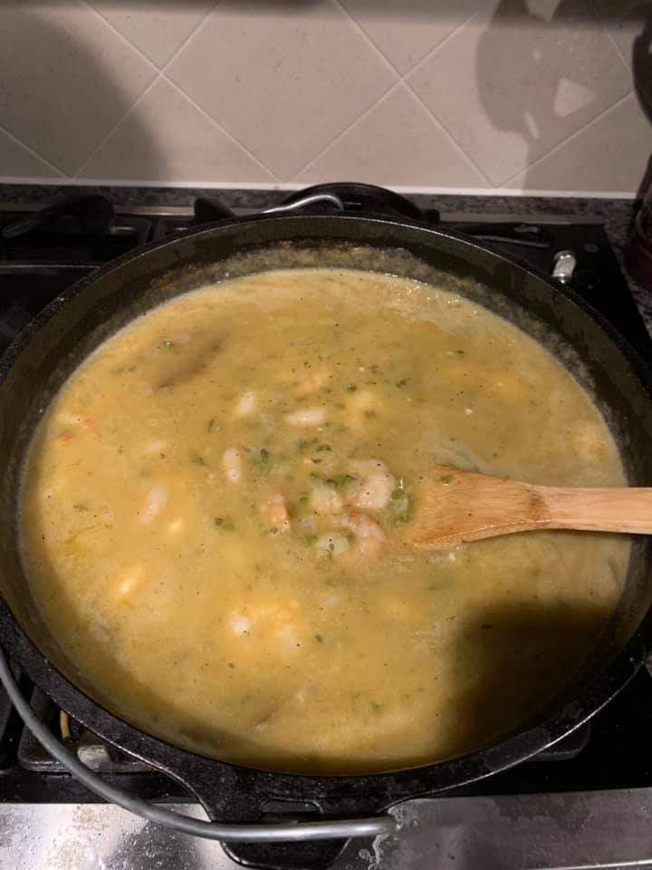

Maudi's Etouffee Recipe
Ingredients:
- butter - 1 stick
- bellpepper - 1 green diced
- yellow onion - 1 large diced
- celery - 2 ribs diced
- garlic - 1 clove diced
- shrimp or crawfish tails - 1 pound
- all-purpose flour - 1 tablespoon
- chicken stock - 1 cup
- Slap ya Mama cajun seasoning - season to taste
- salt - season to taste
- black pepper - season to taste
- green onion - diced for garnish
Directions:
directions for this recipe will go here ... like the creole trinity, butter and more butter, crawfish or shrimpses and many yummy spices